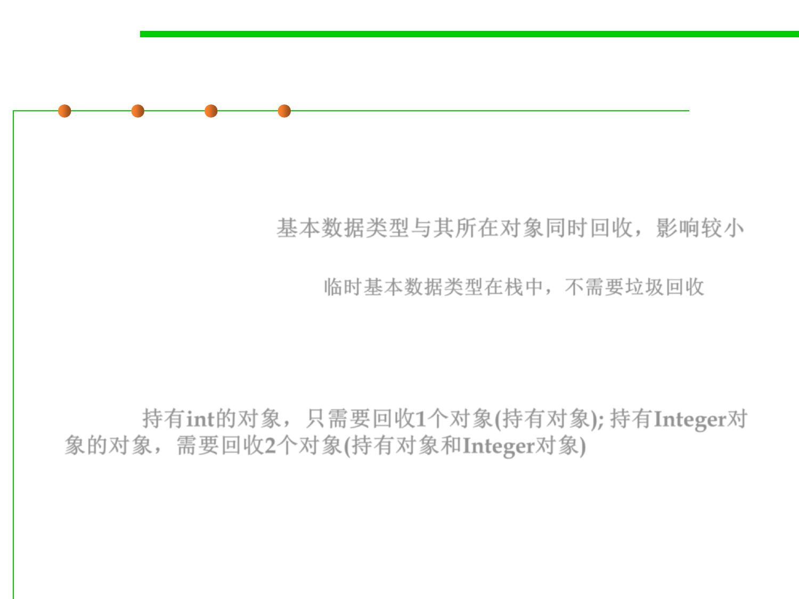

8.3 Code Tuning for Performance Optimization
Primitive data types induce less GC
▪ The primitive data types in Java use memory space that also needs
reclaiming, but the overhead in reclaiming data-type storage is
smaller: it is reclaimed at the same time as its holding object and so
has a smaller impact. 基本数据类型与其所在对象同时回收，影响较小
– Temporary primitive data types exist only on the stack and do not need to
be garbage-collected at all 临时基本数据类型在栈中，不需要垃圾回收
▪ For example, an object with just one instance variable holding an int is
reclaimed in one object reclaim.
▪ If it holds an Integer object, the garbage collector needs to reclaim two
objects. 持有int的对象，只需要回收1个对象(持有对象); 持有Integer对
象的对象，需要回收2个对象(持有对象和Integer对象)